Chapter 5: Continuous Random Variables¶
Introduction¶
Chapter Outline: Chapter Objectives
By the end of this chapter, the student should be able to:
- Recognize and understand continuous probability density functions in general.
- Recognize the uniform probability distribution and apply it appropriately.
- Recognize the exponential probability distribution and apply it appropriately.
Continuous random variables have many applications. Baseball batting averages, IQ scores, the length of time a long distance telephone call lasts, the amount of money a person carries, the length of time a computer chip lasts, and SAT scores are just a few. The field of reliability depends on a variety of continuous random variables.
NOTE
The values of discrete and continuous random variables can be ambiguous. For example, if X is equal to the number of miles (to the nearest mile) you drive to work, then X is a discrete random variable. You count the miles. If X is the distance you drive to work, then you measure values of X and X is a continuous random variable. For a second example, if X is equal to the number of books in a backpack, then X is a discrete random variable. If X is the weight of a book, then X is a continuous random variable because weights are measured. How the random variable is defined is very important.
Properties of Continuous Probability Distributions¶
The graph of a continuous probability distribution is a curve. Probability is represented by area under the curve.
The curve is called the probability density function (abbreviated as pdf). We use the symbol f(x) to represent the curve. f(x) is the function that corresponds to the graph; we use the density function f(x) to draw the graph of the probability distribution.
Area under the curve is given by a different function called the cumulative distribution function (abbreviated as cdf). The cumulative distribution function is used to evaluate probability as area.
- The outcomes are measured, not counted.
- The entire area under the curve and above the x-axis is equal to one.
- Probability is found for intervals of x values rather than for individual x values.
- P(c < x < d) is the probability that the random variable X is in the interval between the values c and d. P(c < x < d) is the area under the curve, above the x-axis, to the right of c and the left of d.
- P(x = c) = 0 The probability that x takes on any single individual value is zero. The area below the curve, above the x-axis, and between x = c and x = c has no width, and therefore no area (area = 0). Since the probability is equal to the area, the probability is also zero.
- P(c < x < d) is the same as P(c ≤ x ≤ d) because probability is equal to area.
We will find the area that represents probability by using geometry, formulas, technology, or probability tables. In general, calculus is needed to find the area under the curve for many probability density functions. When we use formulas to find the area in this textbook, the formulas were found by using the techniques of integral calculus. However, because most students taking this course have not studied calculus, we will not be using calculus in this textbook.
There are many continuous probability distributions. When using a continuous probability distribution to model probability, the distribution used is selected to model and fit the particular situation in the best way.
In this chapter and the next, we will study the uniform distribution, the exponential distribution, and the normal distribution. The following graphs illustrate these distributions.
5.1 Continuous Probability Functions¶
We begin by defining a continuous probability density function. We use the function notation f(x). Intermediate algebra may have been your first formal introduction to functions. In the study of probability, the functions we study are special. We define the function f(x) so that the area between it and the x-axis is equal to a probability. Since the maximum probability is one, the maximum area is also one. For continuous probability distributions, PROBABILITY = AREA.
Example 5.1
Consider the function f(x) = \(\frac{1}{20}\) for 0 ≤ x ≤ 20. x = a real number. The graph of f(x) = \(\frac{1}{20}\) is a horizontal line. However, since 0 ≤ x ≤ 20, f(x) is restricted to the portion between x = 0 and x = 20, inclusive.
f(x) = \(\frac{1}{20}\) for 0 ≤ x ≤ 20.
The graph of f(x) = \(\frac{1}{20}\) is a horizontal line segment when 0 ≤ x ≤ 20.
The area between f(x) = \(\frac{1}{20}\) where 0 ≤ x ≤ 20 and the x-axis is the area of a rectangle with base = 20 and height = \(\frac{1}{20}\).
Suppose we want to find the area between *f(x) = \(\frac{1}{20}\) and the x-axis where 0 < x < 2.*
REMINDER
area of a rectangle = (base)(height).
The area corresponds to a probability. The probability that x is between zero and two is 0.1, which can be written mathematically as P(0 < x < 2) = P(x < 2) = 0.1.
Suppose we want to find the area between f(x) = \(\frac{1}{20}\) and the x-axis where 4 < x < 15.
The area corresponds to the probability P(4 < x < 15) = 0.55.
Suppose we want to find P(x = 15). On an x-y graph, x = 15 is a vertical line. A vertical line has no width (or zero width). Therefore, P(x = 15) = (base)(height) = (0)\(\left( \frac{1}{20} \right)\) = 0
P(X ≤ x), which can also be written as P(X < x) for continuous distributions, is called the cumulative distribution function or CDF. Notice the "less than or equal to" symbol. We can also use the CDF to calculate P(X > x). The CDF gives "area to the left" and P(X > x) gives "area to the right." We calculate P(X > x) for continuous distributions as follows: P(X > x) = 1 – P (X < x).
Label the graph with f(x) and x. Scale the x and y axes with the maximum x and y values. f(x) = \(\frac{1}{20}\), 0 ≤ x ≤ 20.
To calculate the probability that x is between two values, look at the following graph. Shade the region between x = 2.3 and x = 12.7. Then calculate the shaded area of a rectangle.
Try It
Consider the function f(x) = \(\frac{1}{8}\) for 0 ≤ x ≤ 8. Draw the graph of f(x) and find P(2.5 < x < 7.5).
5.2 The Uniform Distribution¶
The uniform distribution is a continuous probability distribution and is concerned with events that are equally likely to occur. When working out problems that have a uniform distribution, be careful to note if the data is inclusive or exclusive of endpoints.
Example 5.2
The data in Table 5.1 are 55 smiling times, in seconds, of an eight-week-old baby.
Table 5.1
| 10.4 | 19.6 | 18.8 | 13.9 | 17.8 | 16.8 | 21.6 | 17.9 | 12.5 | 11.1 | 4.9 |
| 12.8 | 14.8 | 22.8 | 20.0 | 15.9 | 16.3 | 13.4 | 17.1 | 14.5 | 19.0 | 22.8 |
| 1.3 | 0.7 | 8.9 | 11.9 | 10.9 | 7.3 | 5.9 | 3.7 | 17.9 | 19.2 | 9.8 |
| 5.8 | 6.9 | 2.6 | 5.8 | 21.7 | 11.8 | 3.4 | 2.1 | 4.5 | 6.3 | 10.7 |
| 8.9 | 9.4 | 9.4 | 7.6 | 10.0 | 3.3 | 6.7 | 7.8 | 11.6 | 13.8 | 18.6 |
The sample mean = 11.65 and the sample standard deviation = 6.08.
We will assume that the smiling times, in seconds, follow a uniform distribution between zero and 23 seconds, inclusive. This means that any smiling time from zero to and including 23 seconds is equally likely. The histogram that could be constructed from the sample is an empirical distribution that closely matches the theoretical uniform distribution.
Let X = length, in seconds, of an eight-week-old baby's smile.
The notation for the uniform distribution is
X ~ U(a, b) where a = the lowest value of x and b = the highest value of x.
The probability density function is f(x) = \(\frac{1}{b-a}\) for a ≤ x ≤ b.
For this example, x ~ U(0, 23) and f(x) = \(\frac{1}{23-0}\) for 0 ≤ X ≤ 23.
Formulas for the theoretical mean and standard deviation are
\(\mu=\frac{a+b}{2}\) and \(\sigma=\sqrt{\frac{{(b-a)}^{2}}{12}}\)
For this problem, the theoretical mean and standard deviation are
μ = \(\frac{0\ +\ 23}{2}\) = 11.50 seconds and σ = \(\sqrt{\frac{{(23\ -\ 0)}^{2}}{12}}\) = 6.64 seconds.
Notice that the theoretical mean and standard deviation are close to the sample mean and standard deviation in this example.
Try It
The data that follow record the total weight, to the nearest pound, of fish caught by passengers on 35 different charter fishing boats on one summer day. The sample mean = 7.9 and the sample standard deviation = 4.33. The data follow a uniform distribution where all values between and including zero and 14 are equally likely. State the values of a and b. Write the distribution in proper notation, and calculate the theoretical mean and standard deviation.
Table 5.2
| 1 | 12 | 4 | 10 | 4 | 14 | 11 |
| 7 | 11 | 4 | 13 | 2 | 4 | 6 |
| 3 | 10 | 0 | 12 | 6 | 9 | 10 |
| 5 | 13 | 4 | 10 | 14 | 12 | 11 |
| 6 | 10 | 11 | 0 | 11 | 13 | 2 |
Example 5.3
a. Refer to Example 5.2. What is the probability that a randomly chosen eight-week-old baby smiles between two and 18 seconds?
Solution
P(2 < x < 18) = (base)(height) = (18 – 2)\(\left( \frac{1}{23} \right)\) = \(\frac{16}{23}\).
b. Find the 90th percentile for an eight-week-old baby's smiling time.
Solution
b. Ninety percent of the smiling times fall below the 90th percentile, k, so P(x < k) = 0.90.
\(P(x \lt k)=0.90\)
\((\text{base})(\text{height})=0.90\)
\(\text{(}k-0\text{)}\left( \frac{1}{23} \right)=0.90\)
\(k=(23)(0.90)=20.7\)
c. Find the probability that a random eight-week-old baby smiles more than 12 seconds KNOWING that the baby smiles MORE THAN EIGHT SECONDS.
Solution
c. This probability question is a conditional. You are asked to find the probability that an eight-week-old baby smiles more than 12 seconds when you already know the baby has smiled for more than eight seconds.
Find P(x > 12|x > 8) There are two ways to do the problem. For the first way, use the fact that this is a conditional and changes the sample space. The graph illustrates the new sample space. You already know the baby smiled more than eight seconds.
Write a new f(x): f(x) = \(\frac{1}{23\ -8}\) = \(\frac{1}{15}\) for 8 < x < 23
P(x > 12|x > 8) = (23 − 12)\(\left( \frac{1}{15} \right)\) = \(\frac{11}{15}\)
For the second way, use the conditional formula from Probability Topics with the original distribution X ~ U (0, 23):
P(A|B) = \(\frac{P(A\ \text{AND}\ B)}{P(B)}\)
For this problem, A is (x > 12) and B is (x > 8).
So, P(x > 12|x > 8) = \(\frac{P(x \gt 12\ \text{AND}\ x \gt 8)}{P(x \gt 8)}=\frac{P(x \gt 12)}{P(x \gt 8)}=\frac{\frac{11}{23}}{\frac{15}{23}}=\frac{11}{15}\)
![This diagram shows a horizontal X axis that intersects a vertical F of x axis at the origin. The X axis runs from 0 to 24 while the Y axis only has the fraction one twenty third located about two thirds of the way to the top. A rectangular box extends horizontally from 0 to 23 on the X axis. The box extends vertically up to the fraction one twenty third on the F of x axis. The area of the box between 8 and 12 on the X axis is lightly shaded. The area of the box between 12 and 23 has darker shading.](img/fig-ch05-03-04.webp)
Try It
A distribution is given as X ~ U (0, 20). What is P(2 < x < 18)? Find the 90th percentile.
Example 5.4
The amount of time, in minutes, that a person must wait for a bus is uniformly distributed between zero and 15 minutes, inclusive.
a. What is the probability that a person waits fewer than 12.5 minutes?
b. On the average, how long must a person wait? Find the mean, μ, and the standard deviation, σ.
c. Ninety percent of the time, the time a person must wait falls below what value?
This asks for the 90th percentile.
Solution
a. Let X = the number of minutes a person must wait for a bus. a = 0 and b = 15. X ~ U(0, 15). Write the probability density function. f (x) = \(\frac{1}{15\ -\ 0}\) = \(\frac{1}{15}\) for 0 ≤ x ≤ 15.
Find P (x < 12.5). Draw a graph.
\(P(x \lt k)=(\text{base})(\text{height})=(12.5-0)\left( \frac{1}{15} \right)=0.8333\)
The probability a person waits less than 12.5 minutes is 0.8333.
b. μ = \(\frac{a\ +\ b}{2}\) = \(\frac{15\ +\ 0}{2}\) = 7.5. On the average, a person must wait 7.5 minutes.
σ = \(\sqrt{\frac{(b-a{)}^{2}}{12}}=\sqrt{\frac{(15-0{)}^{2}}{12}}\) = 4.3. The Standard deviation is 4.3 minutes.
c. Find the 90th percentile. Draw a graph. Let k = the 90th percentile.
\(P(x \lt k)=(\text{base})(\text{height})=(k-0)(\frac{1}{15})\)
\(0.90=(k)\left( \frac{1}{15} \right)\)
\(k=(0.90)(15)=13.5\)
k is sometimes called a critical value.
The 90th percentile is 13.5 minutes. Ninety percent of the time, a person must wait at most 13.5 minutes.
Try It
The total duration of baseball games in the major league in a typical season is uniformly distributed between 447 hours and 521 hours inclusive.
- Find a and b and describe what they represent.
- Write the distribution.
- Find the mean and the standard deviation.
- What is the probability that the duration of games for a team for a single season is between 480 and 500 hours?
- What is the 65th percentile for the duration of games for a team in a single season?
Example 5.5
Suppose the time it takes a nine-year old to eat a donut is between 0.5 and 4 minutes, inclusive. Let X = the time, in minutes, it takes a nine-year old child to eat a donut. Then X ~ U (0.5, 4).
a. The probability that a randomly selected nine-year old child eats a donut in at least two minutes is _______.
b. Find the probability that a different nine-year old child eats a donut in more than two minutes given that the child has already been eating the donut for more than 1.5 minutes.
The second question has a conditional probability. You are asked to find the probability that a nine-year old child eats a donut in more than two minutes given that the child has already been eating the donut for more than 1.5 minutes. Solve the problem two different ways (see Example 5.3). You must reduce the sample space. First way: Since you know the child has already been eating the donut for more than 1.5 minutes, you are no longer starting at a = 0.5 minutes. Your starting point is 1.5 minutes.
Write a new f(x):
f(x) = \(\frac{1}{4-1.5}\) = \(\frac{2}{5}\) for 1.5 ≤ x ≤ 4.
Find P(x > 2|x > 1.5). Draw a graph.
P(x > 2|x > 1.5) = (base)(new height) = (4 − 2)\(\left( \frac{2}{5} \right)=\frac{4}{5}\)
Solution
a. 0.5714
b. \(\frac{4}{5}\)
The probability that a nine-year old child eats a donut in more than two minutes given that the child has already been eating the donut for more than 1.5 minutes is \(\frac{4}{5}\).
Second way: Draw the original graph for X ~ U (0.5, 4). Use the conditional formula
P(x > 2|x > 1.5) = \(\frac{P(x \gt 2\ \text{AND}\ x \gt 1.5)}{P(x \gt 1.5)}=\frac{P(x \gt 2)}{P(x \gt 1.5)}=\frac{\frac{2}{3.5}}{\frac{2.5}{3.5}}=0.8=\frac{4}{5}\)
Try It
Suppose the time it takes a student to finish a quiz is uniformly distributed between six and 15 minutes, inclusive. Let X = the time, in minutes, it takes a student to finish a quiz. Then X ~ U (6, 15).
Find the probability that a randomly selected student needs at least eight minutes to complete the quiz. Then find the probability that a different student needs at least eight minutes to finish the quiz given that she has already taken more than seven minutes.
Example 5.6
Ace Heating and Air Conditioning Service finds that the amount of time a repair tech needs to fix a furnace is uniformly distributed between 1.5 and four hours. Let x = the time needed to fix a furnace. Then x ~ U (1.5, 4).
- Find the probability that a randomly selected furnace repair requires more than two hours.
- Find the probability that a randomly selected furnace repair requires less than three hours.
- Find the 30th percentile of furnace repair times.
- The longest 25% of furnace repair times take at least how long? (In other words: find the minimum time for the longest 25% of repair times.) What percentile does this represent?
- Find the mean and standard deviation
Solution
a. To find f(x): f (x) = \(\frac{1}{4\ -\ 1.5}\) = \(\frac{1}{2.5}\) so f(x) = 0.4
P(x > 2) = (base)(height) = (4 – 2)(0.4) = 0.8
b. P(x < 3) = (base)(height) = (3 – 1.5)(0.4) = 0.6
The graph of the rectangle showing the entire distribution would remain the same. However the graph should be shaded between x = 1.5 and x = 3. Note that the shaded area starts at x = 1.5 rather than at x = 0; since X ~ U (1.5, 4), x can not be less than 1.5.
c.
P (x < k) = 0.30
P(x < k) = (base)(height) = (k – 1.5)(0.4)
0.3 = (k – 1.5) (0.4); Solve to find k:
0.75 = k* – 1.5, obtained by dividing both sides by 0.4
k = 2.25* , obtained by adding 1.5 to both sides
The 30th percentile of repair times is 2.25 hours. 30% of repair times are 2.25 hours or less.
d.
P(x > k) = 0.25
P(x > k) = (base)(height) = (4 – k)(0.4)
0.25 = (4 – k)(0.4); Solve for k:
0.625 = 4 − k,
obtained by dividing both sides by 0.4
−3.375 = −k*,
obtained by subtracting four from both sides: k = 3.375
The longest 25% of furnace repairs take at least 3.375 hours (3.375 hours or longer).
Note: Since 25% of repair times are 3.375 hours or longer, that means that 75% of repair times are 3.375 hours or less. 3.375 hours is the 75th percentile* of furnace repair times.
e. \(\mu=\frac{a+b}{2}\) and \(\sigma=\sqrt{\frac{{(b-a)}^{2}}{12}}\)
\(\mu=\frac{1.5+4}{2}=2.75\) hours and \(\sigma=\sqrt{\frac{{(4-1.5)}^{2}}{12}}=0.7217\) hours
Try It
The amount of time a service technician needs to change the oil in a car is uniformly distributed between 11 and 21 minutes. Let X = the time needed to change the oil on a car.
- Write the random variable X in words. X = __________________.
- Write the distribution.
- Graph the distribution.
- Find P (x > 19).
- Find the 50th percentile.
5.3 The Exponential Distribution¶
The exponential distribution is often concerned with the amount of time until some specific event occurs. For example, the amount of time (beginning now) until an earthquake occurs has an exponential distribution. Other examples include the length, in minutes, of long distance business telephone calls, and the amount of time, in months, a car battery lasts. It can be shown, too, that the value of the change that you have in your pocket or purse approximately follows an exponential distribution.
Values for an exponential random variable occur in the following way. There are fewer large values and more small values. For example, the amount of money customers spend in one trip to the supermarket follows an exponential distribution. There are more people who spend small amounts of money and fewer people who spend large amounts of money.
Exponential distributions are commonly used in calculations of product reliability, or the length of time a product lasts.
Example 5.7
Let X = amount of time (in minutes) a postal clerk spends with their customer. The time is known to have an exponential distribution with the average amount of time equal to four minutes.
X is a continuous random variable since time is measured. It is given that μ = 4 minutes. To do any calculations, you must know m, the decay parameter.
\(m=\frac{1}{\mu}\). Therefore, \(m=\frac{1}{4}=0.25.\)
The standard deviation, σ, is the same as the mean. μ = σ
The distribution notation is X ~ Exp(m). Therefore, X ~ Exp(0.25).
The probability density function is f(x) = me-mx. The number e = 2.71828182846... It is a number that is used often in mathematics. Scientific calculators have the key "ex." If you enter one for x, the calculator will display the value e.
The curve is:
f(x) = 0.25e–0.25x where x is at least zero and m = 0.25.
For example, f(5) = 0.25e(-0.25)(5) = 0.072. The value 0.072 is the height of the curve when x = 5. In Example 5.8 below, you will learn how to find probabilities using the decay parameter.
The graph is as follows:
Notice the graph is a declining curve. When x = 0,
f(x) = 0.25e(−0.25)(0) = (0.25)(1) = 0.25 = m. The maximum value on the y-axis is m.
Try It
The amount of time spouses shop for anniversary cards can be modeled by an exponential distribution with the average amount of time equal to eight minutes. Write the distribution, state the probability density function, and graph the distribution.
Example 5.8
a. Using the information in Example 5.7, find the probability that a clerk spends four to five minutes with a randomly selected customer.
Solution
a. Find P(4 < x < 5).
The cumulative distribution function (CDF) gives the area to the left.
P(x < x) = 1 – e–mx
P(x < 5) = 1 – e(−0.25)(5) = 0.7135 and P(x < 4) = 1 – e(–0.25)(4) = 0.6321
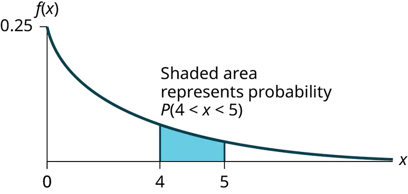
NOTE
You can do these calculations easily on a calculator.
The probability that a postal clerk spends four to five minutes with a randomly selected customer is P(4 < x < 5) = P(x < 5) – P(x < 4) = 0.7135 − 0.6321 = 0.0814.
Using the Calculator
On the home screen, enter (1 – e^(–0.25*5))–(1–e^(–0.25*4)) or enter e^(–0.25*4) – e^(–0.25*5).
b. Half of all customers are finished within how long? (Find the 50th percentile)
Solution
b. Find the 50th percentile.
P(x < k) = 0.50, k = 2.8 minutes (calculator or computer)
Half of all customers are finished within 2.8 minutes.
You can also do the calculation as follows:
P(x < k) = 0.50 and P(x < k) = 1 –e–0.25k
Therefore, 0.50 = 1 − e−0.25k and e−0.25k = 1 − 0.50 = 0.5
Take natural logs: ln(e–0.25k) = ln(0.50). So, –0.25k = ln(0.50)
Solve for k:\(k=\frac{ln(0.50)}{-0.25}=2.8\) minutes. The calculator simplifies the calculation for percentile k. See the following two notes.
NOTE
A formula for the percentile k is \(k=\frac{ln(1-AreaToTheLeft)}{-m}\) where ln is the natural log.
Using the Calculator
On the home screen, enter ln(1 – 0.50)/–0.25. Press the (-) for the negative.
c. Which is larger, the mean or the median?
Solution
c. From part b, the median or 50th percentile is 2.8 minutes. The theoretical mean is four minutes. The mean is larger.
Try It
The number of days ahead travelers purchase their airline tickets can be modeled by an exponential distribution with the average amount of time equal to 15 days. Find the probability that a traveler will purchase a ticket fewer than ten days in advance. How many days do half of all travelers wait?
Collaborative Exercise
Have each class member count the change they have in their pocket or purse. Your instructor will record the amounts in dollars and cents. Construct a histogram of the data taken by the class. Use five intervals. Draw a smooth curve through the bars. The graph should look approximately exponential. Then calculate the mean.
Let X = the amount of money a student in your class has in their pocket or purse.
The distribution for X is approximately exponential with mean, μ = _______ and m = _______. The standard deviation, σ = ________.
Draw the appropriate exponential graph. You should label the x– and y–axes, the decay rate, and the mean. Shade the area that represents the probability that one student has less than $.40 in their pocket or purse. (Shade P(x < 0.40)).
Example 5.9
On the average, a certain computer part lasts ten years. The length of time the computer part lasts is exponentially distributed.
a. What is the probability that a computer part lasts more than 7 years?
Solution
a. Let x = the amount of time (in years) a computer part lasts.
μ = 10 so \(m=\frac{1}{\mu}=\frac{1}{10}=0.1\)
Find P(x > 7). Draw the graph.
P(x > 7) = 1 – P(x < 7).
Since P(X < x) = 1 –e–mx then P(X > x) = 1 –(1 –e–mx) = e-mx
P(x > 7) = e(–0.1)(7) = 0.4966. The probability that a computer part lasts more than seven years is 0.4966.
Using the Calculator
On the home screen, enter e^(-.1*7).
b. On the average, how long would five computer parts last if they are used one after another?
Solution
b. On the average, one computer part lasts ten years. Therefore, five computer parts, if they are used one right after the other would last, on the average, (5)(10) = 50 years.
c. Eighty percent of computer parts last at most how long?
Solution
c. Find the 80th percentile. Draw the graph. Let k = the 80th percentile.
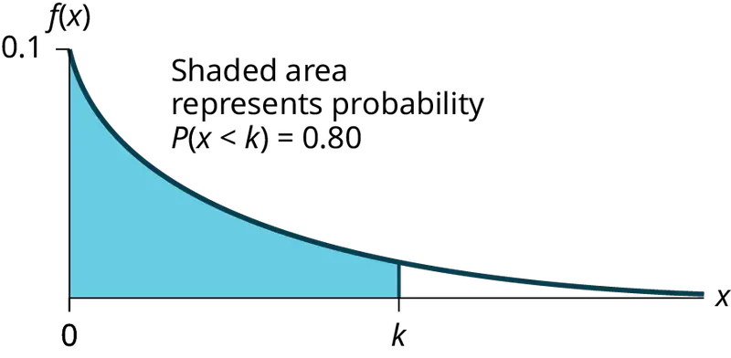
Solve for k: \(k=\frac{ln(1-0.80)}{-0.1}=16.1\) years
Eighty percent of the computer parts last at most 16.1 years.
Using the Calculator
On the home screen, enter \(\frac{\ln(1-0.80)}{-0.1}\)
d. What is the probability that a computer part lasts between nine and 11 years?
Solution
d. Find P(9 < x < 11). Draw the graph.
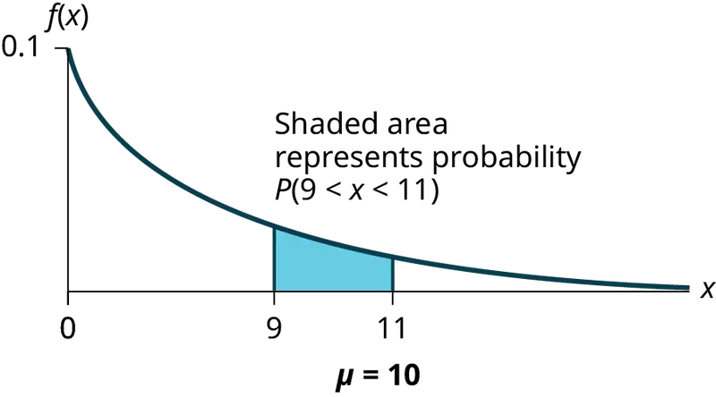
P(9 < x < 11) = P(x < 11) – P(x < 9) = (1 – e(–0.1)(11)) – (1 – e(–0.1)(9)) = 0.6671 – 0.5934 = 0.0737. The probability that a computer part lasts between nine and 11 years is 0.0737.
Using the Calculator
On the home screen, enter e^(–0.1*9) – e^(–0.1*11).
Try It
On average, a pair of running shoes can last 18 months if used every day. The length of time running shoes last is exponentially distributed. What is the probability that a pair of running shoes last more than 15 months? On average, how long would six pairs of running shoes last if they are used one after the other? Eighty percent of running shoes last at most how long if used every day?
Example 5.10
Suppose that the length of a phone call, in minutes, is an exponential random variable with decay parameter \(\frac{1}{12}\). If another person arrives at a public telephone just before you, find the probability that you will have to wait more than five minutes. Let X = the length of a phone call, in minutes.
What is m, μ, and σ? The probability that you must wait more than five minutes is _______ .
Solution
- m = \(\frac{1}{12}\)
- μ = 12
- σ = 12
P(x > 5) = 0.6592
Try It
Suppose that the distance, in miles, that people are willing to commute to work is an exponential random variable with a decay parameter \(\frac{1}{20}\). Let X = the distance people are willing to commute in miles. What is m, μ, and σ? What is the probability that a person is willing to commute more than 25 miles?
Example 5.11
The time spent waiting between events is often modeled using the exponential distribution. For example, suppose that an average of 30 customers per hour arrive at a store and the time between arrivals is exponentially distributed.
- On average, how many minutes elapse between two successive arrivals?
- When the store first opens, how long on average does it take for three customers to arrive?
- After a customer arrives, find the probability that it takes less than one minute for the next customer to arrive.
- After a customer arrives, find the probability that it takes more than five minutes for the next customer to arrive.
- Seventy percent of the customers arrive within how many minutes of the previous customer?
- Is an exponential distribution reasonable for this situation?
Solution
a. Since we expect 30 customers to arrive per hour (60 minutes), we expect on average one customer to arrive every two minutes on average.
b. Since one customer arrives every two minutes on average, it will take six minutes on average for three customers to arrive.
c. Let X = the time between arrivals, in minutes. By part a, μ = 2, so m = \(\frac{1}{2}\) = 0.5.
Therefore, X ∼ Exp(0.5).
The cumulative distribution function is P(X < x) = 1 – e(-0.5)(x).
ThereforeP(X < 1) = 1 – e(–0.5)(1) ≈ 0.3935.
Using the Calculator
1 - e^(–0.5) ≈ 0.3935
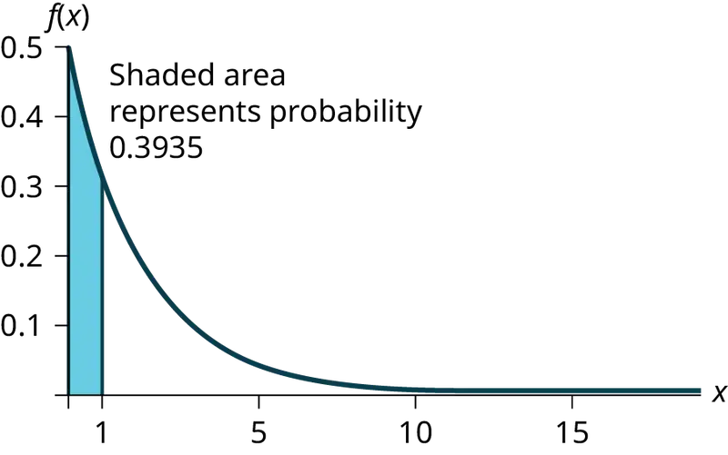
d. P(X > 5) = 1 – P(X < 5) = 1 – (1 – e(-0.50)(5)) = e–2.5 ≈ 0.0821.
Using the Calculator
1 – (1 – e^((-0.50)(5))) or e^( – 5*0.5)
e. We want to solve 0.70 = P(X < x) for x.
Substituting in the cumulative distribution function gives 0.70 = 1 – e–0.5x, so that e–0.5x = 0.30. Converting this to logarithmic form gives –0.5x = ln(0.30), or \(x=\frac{ln(0.30)}{-0.5}\approx 2.41\) minutes.
Thus, seventy percent of customers arrive within 2.41 minutes of the previous customer.
You are finding the 70th percentile k so you can use the formula k = \(\frac{ln(1-Area\_To\_The\_Left\_Of\_k)}{(-m)}\)
k = \(\frac{ln(1-0.70)}{(-0.5)}\approx 2.41\) minutes
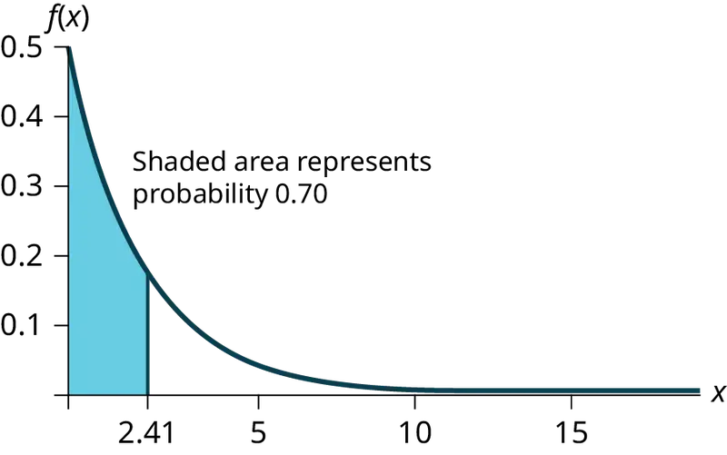
f. This model assumes that a single customer arrives at a time, which may not be reasonable since people might shop in groups, leading to several customers arriving at the same time. It also assumes that the flow of customers does not change throughout the day, which is not valid if some times of the day are busier than others.
Try It
Suppose that on a certain stretch of highway, cars pass at an average rate of five cars per minute. Assume that the duration of time between successive cars follows the exponential distribution.
- On average, how many seconds elapse between two successive cars?
- After a car passes by, how long on average will it take for another seven cars to pass by?
- Find the probability that after a car passes by, the next car will pass within the next 20 seconds.
- Find the probability that after a car passes by, the next car will not pass for at least another 15 seconds.
Memorylessness of the Exponential Distribution¶
In Example 5.7 recall that the amount of time between customers is exponentially distributed with a mean of two minutes (X ~ Exp (0.5)). Suppose that five minutes have elapsed since the last customer arrived. Since an unusually long amount of time has now elapsed, it would seem to be more likely for a customer to arrive within the next minute. With the exponential distribution, this is not the case–the additional time spent waiting for the next customer does not depend on how much time has already elapsed since the last customer. This is referred to as the memoryless property. Specifically, the memoryless property says that
P (X > r + t | X > r) = P (X > t) for all r ≥ 0 and t ≥ 0
For example, if five minutes have elapsed since the last customer arrived, then the probability that more than one minute will elapse before the next customer arrives is computed by using r = 5 and t = 1 in the foregoing equation.
P(X > 5 + 1 | X > 5) = P(X > 1) = \(e^{(-0.5)(1)}\) ≈ 0.6065.
This is the same probability as that of waiting more than one minute for a customer to arrive after the previous arrival.
The exponential distribution is often used to model the longevity of an electrical or mechanical device. In Example 5.9, the lifetime of a certain computer part has the exponential distribution with a mean of ten years (X ~ Exp(0.1)). The memoryless property says that knowledge of what has occurred in the past has no effect on future probabilities. In this case it means that an old part is not any more likely to break down at any particular time than a brand new part. In other words, the part stays as good as new until it suddenly breaks. For example, if the part has already lasted ten years, then the probability that it lasts another seven years is P(X > 17|X > 10) = P(X > 7) = 0.4966.
Example 5.12
Refer to Example 5.7 where the time a postal clerk spends with a customer has an exponential distribution with a mean of four minutes. Suppose a customer has spent four minutes with a postal clerk. What is the probability that the customer will spend at least an additional three minutes with the postal clerk?
The decay parameter of X is m = \(\frac{1}{4}\) = 0.25, so X ∼ Exp(0.25).
The cumulative distribution function is P(X < x) = 1 – e–0.25x.
We want to find P(X > 7|X > 4). The memoryless property says that P(X > 7|X > 4) = P (X > 3), so we just need to find the probability that a customer spends more than three minutes with a postal clerk.
This is P(X > 3) = 1 – P (X < 3) = 1 – (1 – e–0.25⋅3) = e–0.75 ≈ 0.4724.
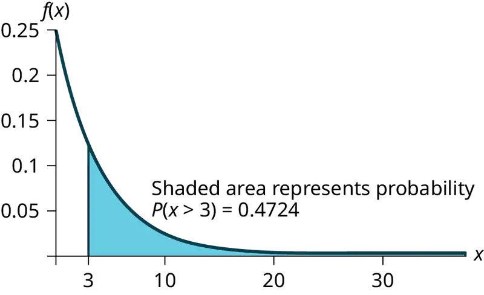
Using the Calculator
1–(1–e^(–0.25*3)) = e^(–0.25*3).
Try It
Suppose that the longevity of a light bulb is exponential with a mean lifetime of eight years. If a bulb has already lasted 12 years, find the probability that it will last a total of over 19 years.
Relationship between the Poisson and the Exponential Distribution¶
There is an interesting relationship between the exponential distribution and the Poisson distribution. Suppose that the time that elapses between two successive events follows the exponential distribution with a mean of μ units of time. Also assume that these times are independent, meaning that the time between events is not affected by the times between previous events. If these assumptions hold, then the number of events per unit time follows a Poisson distribution with mean λ = 1/μ. Recall from the chapter on Discrete Random Variables that if X has the Poisson distribution with mean λ, then \(P(X=k)=\frac{\lambda^{k}e^{-\lambda}}{k!}\). Conversely, if the number of events per unit time follows a Poisson distribution, then the amount of time between events follows the exponential distribution. (k! = k*(k–1*)(k–2)*(k–3)*…3*2*1)
Using the Calculator
Suppose X has the Poisson distribution with mean λ. Compute P(X = k) by entering 2nd, VARS(DISTR), C: poissonpdf(λ, k). To compute P(X ≤ k), enter 2nd, VARS (DISTR), D:poissoncdf(λ, k).
Example 5.13
At a police station in a large city, calls come in at an average rate of four calls per minute. Assume that the time that elapses from one call to the next has the exponential distribution. Take note that we are concerned only with the rate at which calls come in, and we are ignoring the time spent on the phone. We must also assume that the times spent between calls are independent. This means that a particularly long delay between two calls does not mean that there will be a shorter waiting period for the next call. We may then deduce that the total number of calls received during a time period has the Poisson distribution.
- Find the average time between two successive calls.
- Find the probability that after a call is received, the next call occurs in less than ten seconds.
- Find the probability that exactly five calls occur within a minute.
- Find the probability that less than five calls occur within a minute.
- Find the probability that more than 40 calls occur in an eight-minute period.
Solution
a. On average there are four calls occur per minute, so 15 seconds, or \(\frac{15}{60}\) = 0.25 minutes occur between successive calls on average.
b. Let T = time elapsed between calls. From part a, μ = 0.25, so m = \(\frac{1}{0.25}\) = 4. Thus, T ∼ Exp(4).
The cumulative distribution function is P(T < t) = 1 – e–4t.
The probability that the next call occurs in less than ten seconds (ten seconds = 1/6 minute) is \(P\left( T\ \text{ \lt }\ \frac{1}{6} \right)=1-e^{(-4)\left( \frac{1}{6} \right)}\approx 0.4866.\)
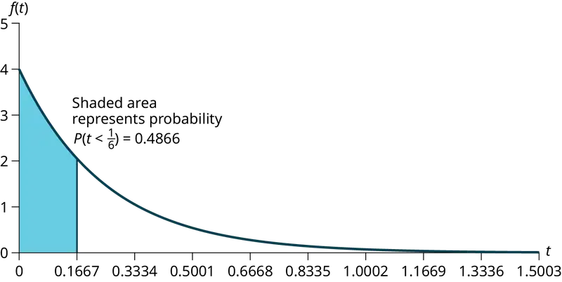
c. Let X = the number of calls per minute. As previously stated, the number of calls per minute has a Poisson distribution, with a mean of four calls per minute.
Therefore, X ∼ Poisson(4), and so P(X = 5) = \(\frac{4^{5}e^{-4}}{5!}\) ≈ 0.1563. (5! = (5)(4)(3)(2)(1))
Using the Calculator
poissonpdf(4, 5) = 0.1563.
d. Keep in mind that X must be a whole number, so P(X < 5) = P(X ≤ 4).
To compute this, we could take P(X = 0) + P(X = 1) + P(X = 2) + P(X = 3) + P(X = 4).
Using technology, we see that P(X ≤ 4) = 0.6288.
Using the Calculator
poisssoncdf(4, 4) = 0.6288
e. Let Y = the number of calls that occur during an eight minute period.
Since there is an average of four calls per minute, there is an average of (8)(4) = 32 calls during each eight minute period.
Hence, Y ∼ Poisson(32). Therefore, P(Y > 40) = 1 – P (Y ≤ 40) = 1 – 0.9294 = 0.0707.
Using the Calculator
1 – poissoncdf(32, 40). = 0.0707
Try It
In a small city, the number of automobile accidents occur with a Poisson distribution at an average of three per week.
- Calculate the probability that there are at most 2 accidents occur in any given week.
- What is the probability that there is at least two weeks between any 2 accidents?
5.4 Continuous Distribution¶
Lab: Continuous Distribution
Class Time:
Names:
Student Learning Outcomes
- The student will compare and contrast empirical data from a random number generator with the uniform distribution.
Collect the Data
Use a random number generator to generate 50 values between zero and one (inclusive). List them in Table 5.3. Round the numbers to four decimal places or set the calculator MODE to four places.
1. Complete the table.
Table 5.3
2. Calculate the following:
a. \(\bar{x}=\) _______
b. s = _______
c. first quartile = _______
d. third quartile = _______
e. median = _______
Organize the Data
1. Construct a histogram of the empirical data. Make eight bars.

2. Construct a histogram of the empirical data. Make five bars.
Describe the Data
- In two to three complete sentences, describe the shape of each graph. (Keep it simple. Does the graph go straight across, does it have a V shape, does it have a hump in the middle or at either end, and so on. One way to help you determine a shape is to draw a smooth curve roughly through the top of the bars.)
- Describe how changing the number of bars might change the shape.
Theoretical Distribution
-
In words, X = _____________________________________.
-
The theoretical distribution of X is X ~ U(0,1).
-
In theory, based upon the distribution X ~ U(0,1), complete the following.
a. μ = ______
b. σ = ______
c. first quartile = ______
d. third quartile = ______
e. median = __________
-
Are the empirical values (the data) in the section titled Collect the Data close to the corresponding theoretical values? Why or why not?
Plot the Data
- Construct a box plot of the data. Be sure to use a ruler to scale accurately and draw straight edges.
- Do you notice any potential outliers? If so, which values are they? Either way, justify your answer numerically. (Recall that any DATA that are less than Q1 – 1.5(IQR) or more than Q3 + 1.5(IQR) are potential outliers. IQR means interquartile range.)
Compare the Data
-
For each of the following parts, use a complete sentence to comment on how the value obtained from the data compares to the theoretical value you expected from the distribution in the section titled Theoretical Distribution.
a. minimum value: _______
b. first quartile: _______
c. median: _______
d. third quartile: _______
e. maximum value: _______
f. width of IQR: _______
g. overall shape: _______
-
Based on your comments in the section titled Collect the Data, how does the box plot fit or not fit what you would expect of the distribution in the section titled Theoretical Distribution?
Discussion Question
- Suppose that the number of values generated was 500, not 50. How would that affect what you would expect the empirical data to be and the shape of its graph to look like?
Chapter Review¶
Key Terms¶
- Conditional Probability
- the likelihood that an event will occur given that another event has already occurred.
- decay parameter
- The decay parameter describes the rate at which probabilities decay to zero for increasing values of x. It is the value m in the probability density function f(x) = me(-mx) of an exponential random variable. It is also equal to m = \(\frac{1}{\mu}\) , where μ is the mean of the random variable.
- Exponential Distribution
- a continuous random variable (RV) that appears when we are interested in the intervals of time between some random events, for example, the length of time between emergency arrivals at a hospital; the notation is X ~ Exp(m). The mean is μ = \(\frac{1}{m}\) and the standard deviation is σ = \(\frac{1}{m}\). The probability density function is f(x) = me−mx, x ≥ 0 and the cumulative distribution function is P(X ≤ x) = 1 − e−mx.
- memoryless property
- For an exponential random variable X, the memoryless property is the statement that knowledge of what has occurred in the past has no effect on future probabilities. This means that the probability that X exceeds x + k, given that it has exceeded x, is the same as the probability that X would exceed k if we had no knowledge about it. In symbols we say that P(X > x + k|X > x) = P(X > k).
- Poisson distribution
- If there is a known average of λ events occurring per unit time, and these events are independent of each other, then the number of events X occurring in one unit of time has the Poisson distribution. The probability of k events occurring in one unit time is equal to \(P(X=k)=\frac{\lambda^{k}e^{-\lambda}}{k!}\).
- Uniform Distribution
- a continuous random variable (RV) that has equally likely outcomes over the domain, a < x < b. Notation: X ~ U(a,b). The mean is μ = \(\frac{a+b}{2}\) and the standard deviation is \(\sigma=\sqrt{\frac{{(b-a)}^{2}}{12}}\). The probability density function is f(x) = \(\frac{1}{b-a}\) for a < x < b or a ≤ x ≤ b. The cumulative distribution is P(X ≤ x) = \(\frac{x-a}{b-a}\).
Chapter Review¶
5.1 Continuous Probability Functions¶
The probability density function (pdf) is used to describe probabilities for continuous random variables. The area under the density curve between two points corresponds to the probability that the variable falls between those two values. In other words, the area under the density curve between points a and b is equal to P(a < x < b). The cumulative distribution function (cdf) gives the probability as an area. If X is a continuous random variable, the probability density function (pdf), f(x), is used to draw the graph of the probability distribution. The total area under the graph of f(x) is one. The area under the graph of f(x) and between values a and b gives the probability P(a < x < b).

The cumulative distribution function (cdf) of X is defined by P (X ≤ x). It is a function of x that gives the probability that the random variable is less than or equal to x.
5.2 The Uniform Distribution¶
If X has a uniform distribution where a < x < b or a ≤ x ≤ b, then X takes on values between a and b (may include a and b). All values x are equally likely. We write X ∼ U(a, b). The mean of X is \(\mu=\frac{a+b}{2}\). The standard deviation of X is \(\sigma=\sqrt{\frac{{(b-a)}^{2}}{12}}\). The probability density function of X is \(f(x)=\frac{1}{b-a}\) for a ≤ x ≤ b. The cumulative distribution function of X is P(X ≤ x) = \(\frac{x-a}{b-a}\). X is continuous.
The probability P(c < X < d) may be found by computing the area under f(x), between c and d. Since the corresponding area is a rectangle, the area may be found simply by multiplying the width and the height.
5.3 The Exponential Distribution¶
If X has an exponential distribution with mean μ, then the decay parameter is m = \(\frac{1}{\mu}\), and we write X ∼ Exp(m) where x ≥ 0 and m > 0 . The probability density function of X is f(x) = me-mx (or equivalently \(f(x)=\frac{1}{\mu}e^{-x/\mu}\). The cumulative distribution function of X is P(X ≤ x) = 1 – e–mx.
The exponential distribution has the memoryless property, which says that future probabilities do not depend on any past information. Mathematically, it says that P(X > x + k|X > x) = P(X > k).
If T represents the waiting time between events, and if T ∼ Exp(λ), then the number of events X per unit time follows the Poisson distribution with mean λ. The probability density function of X is \(P(X=k)=\frac{\lambda^{k}e^{-k}}{k!}\). This may be computed using a TI-83, 83+, 84, 84+ calculator with the command poissonpdf(λ, k). The cumulative distribution function P(X ≤ k) may be computed using the TI-83, 83+,84, 84+ calculator with the command poissoncdf(λ, k).
Formula Review¶
5.1 Continuous Probability Functions¶
Probability density function (pdf) f(x):
- f(x) ≥ 0
- The total area under the curve f(x) is one.
Cumulative distribution function (cdf): P(X ≤ x)
5.2 The Uniform Distribution¶
X = a real number between a and b (in some instances, X can take on the values a and b). a = smallest X; b = largest X
X ~ U (a, b)
The mean is \(\mu=\frac{a+b}{2}\)
The standard deviation is \(\sigma=\sqrt{\frac{{(b-a)}^{2}}{12}}\)
Probability density function: \(f(x)=\frac{1}{b-a}\) for \(a\le X\le b\)
Area to the Left of x: P(X < x) = (x – a)\(\left( \frac{1}{b-a} \right)\)
Area to the Right of x: P(X > x) = (b – x)\(\left( \frac{1}{b-a} \right)\)
Area Between c and d: P(c < x < d) = (base)(height) = (d – c)\(\left( \frac{1}{b-a} \right)\)
Uniform: X ~ U(a, b) where a < x < b
- pdf: \(f(x)=\frac{1}{b-a}\) for a ≤ x ≤ b
- cdf: P(X ≤ x) = \(\frac{x-a}{b-a}\)
- mean µ = \(\frac{a+b}{2}\)
- standard deviation σ\(=\sqrt{\frac{{(b-a)}^{2}}{12}}\)
- P(c < X < d) = (d – c)\((\frac{1}{b-a})\)
5.3 The Exponential Distribution¶
Exponential: X ~ Exp(m) where m = the decay parameter
-
pdf: f(x) = me(–mx) where x ≥ 0 and m > 0
-
cdf: P(X ≤ x) = 1 – e(–mx)
-
mean µ = \(\frac{1}{m}\)
-
standard deviation σ = µ
-
percentile k: k = \(\frac{ln(1-AreaToTheLeftOfk)}{(-m)}\)
-
Additionally
- P(X > x) = e(–mx)
- P(a < X < b) = e(–ma) – e(–mb)
-
Memoryless Property: P(X > x + k|X > x) = P (X > k)
-
Poisson probability: \(P(X=k)=\frac{\lambda^{k}e^{-\lambda}}{k!}\) with mean λ
-
k! = k*(k-1)*(k-2)*(k-3)*…3*2*1
Practice¶
5.1 Continuous Probability Functions¶
1. Which type of distribution does the graph illustrate?
Answer
Uniform Distribution
2. Which type of distribution does the graph illustrate?
3. Which type of distribution does the graph illustrate?
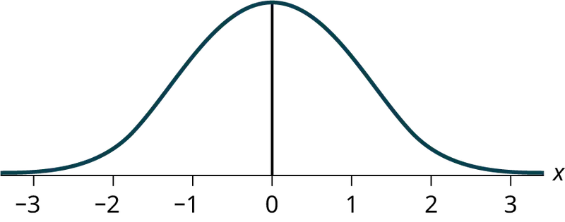
Answer
Normal Distribution
4. What does the shaded area represent? P(___< x < ___)
5. What does the shaded area represent? P(___< x < ___)
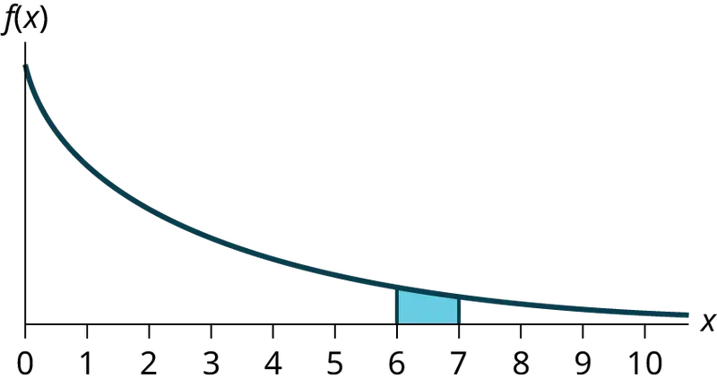
Answer
P(6 < x < 7)
6. For a continuous probablity distribution, 0 ≤ x ≤ 15. What is P(x > 15)?
7. What is the area under f(x) if the function is a continuous probability density function?
Answer
one
8. For a continuous probability distribution, 0 ≤ x ≤ 10. What is P(x = 7)?
9. A continuous probability function is restricted to the portion between x = 0 and 7. What is P(x = 10)?
Answer
zero
10. f(x) for a continuous probability function is \(\frac{1}{5}\), and the function is restricted to 0 ≤ x ≤ 5. What is P(x < 0)?
11. f(x), a continuous probability function, is equal to \(\frac{1}{12}\), and the function is restricted to 0 ≤ x ≤ 12. What is P (0 < x < 12)?
Answer
one
12. Find the probability that x falls in the shaded area.
13. Find the probability that x falls in the shaded area.
Answer
0.625
14. Find the probability that x falls in the shaded area.
15. f(x), a continuous probability function, is equal to \(\frac{1}{3}\) and the function is restricted to 1 ≤ x ≤ 4. Describe \(P\left( x \gt \frac{3}{2} \right).\)
Answer
The probability is equal to the area from x = \(\frac{3}{2}\) to x = 4 above the x-axis and up to f(x) = \(\frac{1}{3}\).
5.2 The Uniform Distribution¶
Use the following information to answer the next ten questions. The data that follow are the square footage (in 1,000 feet squared) of 28 homes.
Table 5.4
| 1.5 | 2.4 | 3.6 | 2.6 | 1.6 | 2.4 | 2.0 |
| 3.5 | 2.5 | 1.8 | 2.4 | 2.5 | 3.5 | 4.0 |
| 2.6 | 1.6 | 2.2 | 1.8 | 3.8 | 2.5 | 1.5 |
| 2.8 | 1.8 | 4.5 | 1.9 | 1.9 | 3.1 | 1.6 |
The sample mean = 2.50 and the sample standard deviation = 0.8302.
The distribution can be written as X ~ U(1.5, 4.5).
16. What type of distribution is this?
17. In this distribution, outcomes are equally likely. What does this mean?
Answer
It means that the value of x is just as likely to be any number between 1.5 and 4.5.
18. What is the height of f(x) for the continuous probability distribution?
19. What are the constraints for the values of x?
Answer
1.5 ≤ x ≤ 4.5
20. Graph P(2 < x < 3).
21. What is P(2 < x < 3)?
Answer
0.3333
22. What is P(x < 3.5| x < 4)?
23. What is P(x = 1.5)?
Answer
zero
24. What is the 90th percentile of square footage for homes?
25. Find the probability that a randomly selected home has more than 3,000 square feet given that you already know the house has more than 2,000 square feet.
Answer
0.6
Use the following information to answer the next eight exercises. A distribution is given as X ~ U(0, 12).
26. What is a? What does it represent?
27. What is b? What does it represent?
Answer
b is 12, and it represents the highest value of x.
28. What is the probability density function?
29. What is the theoretical mean?
Answer
six
30. What is the theoretical standard deviation?
31. Draw the graph of the distribution for P(x > 9).
Answer
32. Find P(x > 9).
33. Find the 40th percentile.
Answer
4.8
Use the following information to answer the next eleven exercises. The age of cars in the staff parking lot of a suburban college is uniformly distributed from six months (0.5 years) to 9.5 years.
34. What is being measured here?
35. In words, define the random variable X.
Answer
X = The age (in years) of cars in the staff parking lot
36. Are the data discrete or continuous?
37. The interval of values for x is ______.
Answer
0.5 to 9.5
38. The distribution for X is ______.
39. Write the probability density function.
Answer
f(x) = \(\frac{1}{9}\) where x is between 0.5 and 9.5, inclusive.
40. Graph the probability distribution.
a. Sketch the graph of the probability distribution.
b. Identify the following values:
i. Lowest value for \(\bar{x}\): _______
ii. Highest value for \(\bar{x}\): _______
iii. Height of the rectangle: _______
iv. Label for x-axis (words): _______
v. Label for y-axis (words): _______
41. Find the average age of the cars in the lot.
Answer
μ = 5
42. Find the probability that a randomly chosen car in the lot was less than four years old.
a. Sketch the graph, and shade the area of interest.

b. Find the probability. P(x < 4) = _______
43. Considering only the cars less than 7.5 years old, find the probability that a randomly chosen car in the lot was less than four years old.
a. Sketch the graph, shade the area of interest.
b. Find the probability. P(x < 4|x < 7.5) = _______
Answer
- Answers may vary.
- \(\frac{3.5}{7}\)
44. What has changed in the previous two problems that made the solutions different?
45. Find the third quartile of ages of cars in the lot. This means you will have to find the value such that \(\frac{3}{4}\), or 75%, of the cars are at most (less than or equal to) that age.
a. Sketch the graph, and shade the area of interest.
b. Find the value k such that P(x < k) = 0.75.
c. The third quartile is _______
Answer
- Answers may vary.
- k = 7.25
- 7.25
5.3 The Exponential Distribution¶
Use the following information to answer the next ten exercises. A customer service representative must spend different amounts of time with each customer to resolve various concerns. The amount of time spent with each customer can be modeled by the following distribution: X ~ Exp(0.2)
46. What type of distribution is this?
47. Are outcomes equally likely in this distribution? Why or why not?
Answer
No, outcomes are not equally likely. In this distribution, more people require a little bit of time, and fewer people require a lot of time, so it is more likely that someone will require less time.
48. What is m? What does it represent?
49. What is the mean?
Answer
five
50. What is the standard deviation?
51. State the probability density function.
Answer
f(x) = 0.2e-0.2x
52. Graph the distribution.
53. Find P(2 < x < 10).
Answer
0.5350
54. Find P(x > 6).
55. Find the 70th percentile.
Answer
6.02
Use the following information to answer the next seven exercises. A distribution is given as X ~ Exp(0.75).
56. What is m?
57. What is the probability density function?
Answer
f(x) = 0.75e-0.75x
58. What is the cumulative distribution function?
59. Draw the distribution.
Answer
60. Find P(x < 4).
61. Find the 30th percentile.
Answer
0.4756
62. Find the median.
63. Which is larger, the mean or the median?
Answer
The mean is larger. The mean is \(\frac{1}{m}=\frac{1}{0.75}\approx 1.33\), which is greater than 0.9242.
Use the following information to answer the next 16 exercises. Carbon-14 is a radioactive element with a half-life of about 5,730 years. Carbon-14 is said to decay exponentially. The decay rate is 0.000121. We start with one gram of carbon-14. We are interested in the time (years) it takes to decay carbon-14.
64. What is being measured here?
65. Are the data discrete or continuous?
Answer
continuous
66. In words, define the random variable X.
67. What is the decay rate (m)?
Answer
m = 0.000121
68. The distribution for X is ______.
69. Find the amount (percent of one gram) of carbon-14 lasting less than 5,730 years. This means, find P(x < 5,730).
a. Sketch the graph, and shade the area of interest.
b. Find the probability. P(x < 5,730) = __________
Answer
- Answers may vary.
- P(x < 5,730) = 0.5001
70. Find the percentage of carbon-14 lasting longer than 10,000 years.
a. Sketch the graph, and shade the area of interest.
b. Find the probability. P(x > 10,000) = ________
71. Thirty percent (30%) of carbon-14 will decay within how many years?
a. Sketch the graph, and shade the area of interest.
b. Find the value k such that P(x < k) = 0.30.
Answer
- Answers may vary.
- k = 2947.73
Homework¶
5.1 Continuous Probability Functions¶
For each probability and percentile problem, draw the picture.
72. Consider the following experiment. You are one of 100 people enlisted to take part in a study to determine the percent of nurses in America with an R.N. (registered nurse) degree. You ask nurses if they have an R.N. degree. The nurses answer “yes” or “no.” You then calculate the percentage of nurses with an R.N. degree. You give that percentage to your supervisor.
- What part of the experiment will yield discrete data?
- What part of the experiment will yield continuous data?
73. When age is rounded to the nearest year, do the data stay continuous, or do they become discrete? Why?
Answer
Age is a measurement, regardless of the accuracy used.
5.2 The Uniform Distribution¶
For each probability and percentile problem, draw the picture.
74. Births are approximately uniformly distributed throughout the year. They can be said to follow a uniform distribution from 0 to 52 (spread of 52 weeks).
- X ~ _________
- Graph the probability distribution.
- f(x) = _________
- μ = _________
- σ = _________
- Find the probability that a person is born at the exact moment week 19 ends. That is, find P(x = 19) = _________
- P(2 < x < 31) = _________
- Find the probability that a person is born after week 40.
- P(12 < x|x < 28) = _________
- Find the 70th percentile.
- Find the minimum for the upper quarter.
75. A random number generator picks a number from one to nine in a uniform manner.
- X ~ _________
- Graph the probability distribution.
- f(x) = _________
- μ = _________
- σ = _________
- P(3.5 < x < 7.25) = _________
- P(x > 5.67)
- P(x > 5|x > 3) = _________
- Find the 90th percentile.
Answer
- X ~ U(1, 9)
- Answers may vary.
- \(f(x)=\frac{1}{8}\) where \(1\le x\le 9\)
- five
- 2.3
- \(\frac{15}{32}\)
- \(\frac{333}{800}\)
- \(\frac{2}{3}\)
- 8.2
76. According to a study by Dr. John McDougall of his live-in weight loss program, the people who follow his program lose between six and 15 pounds a month until they approach trim body weight. Let’s suppose that the weight loss is uniformly distributed. We are interested in the weight loss of a randomly selected individual following the program for one month.
- Define the random variable. X = _________
- X ~ _________
- Graph the probability distribution.
- f(x) = _________
- μ = _________
- σ = _________
- Find the probability that the individual lost more than ten pounds in a month.
- Suppose it is known that the individual lost more than ten pounds in a month. Find the probability that he lost less than 12 pounds in the month.
- P(7 < x < 13|x > 9) = __________. State this in a probability question, similarly to parts g and h, draw the picture, and find the probability.
77. A subway train arrives every eight minutes during rush hour. We are interested in the length of time a commuter must wait for a train to arrive. The time follows a uniform distribution.
- Define the random variable. X = _______
- X ~ _______
- Graph the probability distribution.
- f(x) = _______
- μ = _______
- σ = _______
- Find the probability that the commuter waits less than one minute.
- Find the probability that the commuter waits between three and four minutes.
- Sixty percent of commuters wait more than how long for the train? State this in a probability question, similarly to parts g and h, draw the picture, and find the probability.
Answer
- X represents the length of time a commuter must wait for a train to arrive on the Red Line.
- X ~ U(0, 8)
- Graph the probability distribution.
- \(f(x)=\frac{1}{8}\) where \(0\le x\le 8\)
- four
- 2.31
- \(\frac{1}{8}\)
- \(\frac{1}{8}\)
- 3.2
78. The age of a first grader on September 1 at Garden Elementary School is uniformly distributed from 5.8 to 6.8 years. We randomly select one first grader from the class.
- Define the random variable. X = _________
- X ~ _________
- Graph the probability distribution.
- f(x) = _________
- μ = _________
- σ = _________
- Find the probability that she is over 6.5 years old.
- Find the probability that she is between four and six years old.
- Find the 70th percentile for the age of first graders on September 1 at Garden Elementary School.
Use the following information to answer the next three exercises. The Sky Train from the terminal to the rental–car and long–term parking center is supposed to arrive every eight minutes. The waiting times for the train are known to follow a uniform distribution.
79. What is the average waiting time (in minutes)?
- zero
- two
- three
- four
Answer
d
80. Find the 30th percentile for the waiting times (in minutes).
- two
- 2.4
- 2.75
- three
81. The probability of waiting more than seven minutes given a person has waited more than four minutes is?
- 0.125
- 0.25
- 0.5
- 0.75
Answer
b
82. The time (in minutes) until the next bus departs a major bus depot follows a distribution with f(x) = \(\frac{1}{20}\) where x goes from 25 to 45 minutes.
- Define the random variable. X = ________
- X ~ ________
- Graph the probability distribution.
- The distribution is ______________ (name of distribution). It is _____________ (discrete or continuous).
- μ = ________
- σ = ________
- Find the probability that the time is at most 30 minutes. Sketch and label a graph of the distribution. Shade the area of interest. Write the answer in a probability statement.
- Find the probability that the time is between 30 and 40 minutes. Sketch and label a graph of the distribution. Shade the area of interest. Write the answer in a probability statement.
- P(25 < x < 55) = _________. State this in a probability statement, similarly to parts g and h, draw the picture, and find the probability.
- Find the 90th percentile. This means that 90% of the time, the time is less than _____ minutes.
- Find the 75th percentile. In a complete sentence, state what this means. (See part j.)
- Find the probability that the time is more than 40 minutes given (or knowing that) it is at least 30 minutes.
83. Suppose that the value of a stock varies each day from $16 to $25 with a uniform distribution.
- Find the probability that the value of the stock is more than $19.
- Find the probability that the value of the stock is between $19 and $22.
- Find the upper quartile - 25% of all days the stock is above what value? Draw the graph.
- Given that the stock is greater than $18, find the probability that the stock is more than $21.
Answer
a. The probability density function of X is \(\frac{1}{25-16}=\frac{1}{9}\).
P(X > 19) = (25 – 19) \(\left( \frac{1}{9} \right)\) = \(\frac{6}{9}\) = \(\frac{2}{3}\).
b. P(19 < X < 22) = (22 – 19) \(\left( \frac{1}{9} \right)\) = \(\frac{3}{9}\) = \(\frac{1}{3}\).
c. The area must be 0.25, and 0.25 = (width)\(\left( \frac{1}{9} \right)\), so width = (0.25)(9) = 2.25. Thus, the value is 25 – 2.25 = 22.75.
d. This is a conditional probability question. P(x > 21| x > 18). You can do this two ways:
- Draw the graph where a is now 18 and b is still 25. The height is \(\frac{1}{(25-18)}\) = \(\frac{1}{7}\)
So, P(x > 21|x > 18) = (25 – 21)\(\left( \frac{1}{7} \right)\) = 4/7. - Use the formula: P(x > 21|x > 18) = \(\frac{P(x \gt 21\ \text{AND}\ x \gt 18)}{P(x \gt 18)}\)
= \(\frac{P(x \gt 21)}{P(x \gt 18)}\) = \(\frac{(25-21)}{(25-18)}\) = \(\frac{4}{7}\).
84. A fireworks show is designed so that the time between fireworks is between one and five seconds, and follows a uniform distribution.
- Find the average time between fireworks.
- Find probability that the time between fireworks is greater than four seconds.
85. The number of miles driven by a truck driver falls between 300 and 700, and follows a uniform distribution.
- Find the probability that the truck driver goes more than 650 miles in a day.
- Find the probability that the truck drivers goes between 400 and 650 miles in a day.
- At least how many miles does the truck driver travel on the furthest 10% of days?
Answer
- P(X > 650) = \(\frac{700-650}{700-300}=\frac{50}{400}=\frac{1}{8}\) = 0.125
- P(400 < X < 650) = \(\frac{650-400}{700-300}=\frac{250}{400}\) = 0.625
- 0.10 = \(\frac{\text{width}}{700-300}\), so width = 400(0.10) = 40. Since 700 – 40 = 660, the drivers travel at least 660 miles on the furthest 10% of days.
5.3 The Exponential Distribution¶
86. Suppose that the length of phone calls, measured in minutes, is known to have an exponential distribution with the average length of a call equal to eight minutes.
- Define the random variable. X = ________________.
- Is X continuous or discrete?
- X ~ ________
- μ = ________
- σ = ________
- Draw a graph of the probability distribution. Label the axes.
- Find the probability that a phone call lasts less than nine minutes.
- Find the probability that a phone call lasts more than nine minutes.
- Find the probability that a phone call lasts between seven and nine minutes.
- If 25 phone calls are made one after another, on average, what would you expect the total to be? Why?
87. Suppose that the useful life of a particular car battery, measured in months, decays with parameter 0.025. We are interested in the life of the battery.
- Define the random variable. X = _________________________________.
- Is X continuous or discrete?
- X ~ ________
- On average, how long would you expect one car battery to last?
- On average, how long would you expect nine car batteries to last, if they are used one after another?
- Find the probability that a car battery lasts more than 36 months.
- Seventy percent of the batteries last at least how long?
Answer
- X = the useful life of a particular car battery, measured in months.
- X is continuous.
- X ~ Exp(0.025)
- 40 months
- 360 months
- 0.4066
- 14.27
88. At one point in time, the percent of persons (ages five and older) in each state who speak a language at home other than English is approximately exponentially distributed with a mean of 9.848. Suppose we randomly pick a state.
a. Define the random variable. X = _________________________________.
b. Is X continuous or discrete?
c. X ~ ________
d. μ = ________
e. σ = ________
f. Draw a graph of the probability distribution. Label the axes.
g. Find the probability that the percent is less than 12.
h. Find the probability that the percent is between eight and 14.
i. The percent of all individuals living in the United States who speak a language at home other than English is 13.8.
i. Why is this number different from 9.848%?
ii. What would make this number higher than 9.848%?
89. The time (in years) after reaching age 60 that it takes an individual to retire is approximately exponentially distributed with a mean of about five years. Suppose we randomly pick one retired individual. We are interested in the time after age 60 to retirement.
- Define the random variable. X = _________________________________.
- Is X continuous or discrete?
- X ~ = ________
- μ = ________
- σ = ________
- Draw a graph of the probability distribution. Label the axes.
- Find the probability that the person retired after age 70.
- Do more people retire before age 65 or after age 65?
- In a room of 1,000 people over age 80, how many do you expect will NOT have retired yet?
Answer
- X = the time (in years) after reaching age 60 that it takes an individual to retire
- X is continuous.
- X ~ Exp\(\left( \frac{1}{5} \right)\)
- five
- five
- Answers may vary.
- 0.1353
- before
- 18.3
90. The cost of all maintenance for a car during its first year is approximately exponentially distributed with a mean of $150.
- Define the random variable. X = _________________________________.
- X ~ = ________
- μ = ________
- σ = ________
- Draw a graph of the probability distribution. Label the axes.
- Find the probability that a car required over $300 for maintenance during its first year.
Use the following information to answer the next three exercises. The average lifetime of a certain new smartphone is three years. The manufacturer will replace any smartphone failing within two years of the date of purchase. The lifetime of these smartphones is known to follow an exponential distribution.
91. The decay rate is:
- 0.3333
- 0.5000
- 2
- 3
Answer
a
92. What is the probability that a smartphone will fail within two years of the date of purchase?
- 0.8647
- 0.4866
- 0.2212
- 0.9997
93. What is the median lifetime of these phones (in years)?
- 0.1941
- 1.3863
- 2.0794
- 5.5452
Answer
c
94. Let X ~ Exp(0.1).
- decay rate = ________
- μ = ________
- Graph the probability distribution function.
- On the graph, shade the area corresponding to P(x < 6) and find the probability.
- Sketch a new graph, shade the area corresponding to P(3 < x < 6) and find the probability.
- Sketch a new graph, shade the area corresponding to P(x < 7) and find the probability.
- Sketch a new graph, shade the area corresponding to the 40th percentile and find the value.
- Find the average value of x.
95. Suppose that the longevity of a light bulb is exponential with a mean lifetime of eight years.
- Find the probability that a light bulb lasts less than one year.
- Find the probability that a light bulb lasts between six and ten years.
- Seventy percent of all light bulbs last at least how long?
- A company decides to offer a warranty to give refunds to light bulbs whose lifetime is among the lowest two percent of all bulbs. To the nearest month, what should be the cutoff lifetime for the warranty to take place?
- If a light bulb has lasted seven years, what is the probability that it fails within the 8th year.
Answer
Let T = the life time of a light bulb.
The decay parameter is m = 1/8, and T ∼ Exp(1/8). The cumulative distribution function is \(P(T \lt t)=1-e^{-\frac{t}{8}}\)
a. Therefore, P(T < 1) = 1 – e\(-\frac{1}{8}\) ≈ 0.1175.
b. We want to find P(6 < t < 10).
To do this, P(6 < t < 10) – P(t < 6)
\(=\left( 1-e^{-\frac{1}{8}*10} \right)-\left( 1-e^{-\frac{1}{8}*6} \right)\) ≈ 0.7135 – 0.5276 = 0.1859
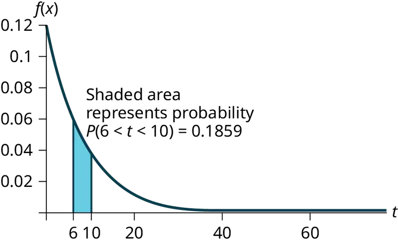
c. We want to find 0.70 \(=P(T \gt t)=1-\left( 1-e^{-\frac{t}{8}} \right)=e^{-\frac{t}{8}}.\)
Solving for t, e\(-\frac{t}{8}\) = 0.70, so \(-\frac{t}{8}\) = ln(0.70), and t = –8ln(0.70) ≈ 2.85 years.
Or use t = \(\frac{ln\text{(area\_to\_the\_right)}}{(-m)}=\frac{ln\text{(0}\text{.70)}}{-\frac{1}{8}}\approx 2.\text{85 years}\).
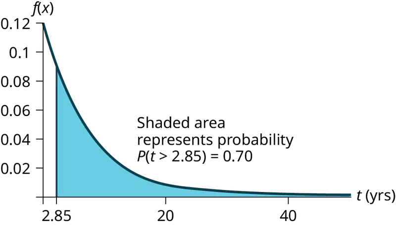
d. We want to find 0.02 = P(T < t) = 1 – e\(-\frac{t}{8}\).
Solving for t, e\(-\frac{t}{8}\) = 0.98, so \(-\frac{t}{8}\) = ln(0.98), and t = –8ln(0.98) ≈ 0.1616 years, or roughly two months.
The warranty should cover light bulbs that last less than 2 months.
Or use \(\frac{\ln\text{(area\_to\_the\_right)}}{\text{(}-\text{m)}}=\frac{\ln\text{(1}-0.2)}{-\frac{1}{8}}\) = 0.1616.
e. We must find P(T < 8|T > 7).
Notice that by the rule of complement events, P(T < 8|T > 7) = 1 – P(T > 8|T > 7).
By the memoryless property (P(X > r + t|X > r) = P(X > t)).
So P(T > 8|T > 7) = P(T > 1) = \(1-\left( 1-e^{-\frac{1}{8}} \right)=e^{-\frac{1}{8}}\approx 0.8825\)
Therefore, P(T < 8|T > 7) = 1 – 0.8825 = 0.1175.
96. At a 911 call center, calls come in at an average rate of one call every two minutes. Assume that the time that elapses from one call to the next has the exponential distribution.
- On average, how much time occurs between five consecutive calls?
- Find the probability that after a call is received, it takes more than three minutes for the next call to occur.
- Ninety-percent of all calls occur within how many minutes of the previous call?
- Suppose that two minutes have elapsed since the last call. Find the probability that the next call will occur within the next minute.
- Find the probability that less than 20 calls occur within an hour.
97. In major league baseball, a no-hitter is a game in which a pitcher, or pitchers, doesn't give up any hits throughout the game. No-hitters occur at a rate of about three per season. Assume that the duration of time between no-hitters is exponential.
- What is the probability that an entire season elapses with a single no-hitter?
- If an entire season elapses without any no-hitters, what is the probability that there are no no-hitters in the following season?
- What is the probability that there are more than 3 no-hitters in a single season?
Answer
Let X = the number of no-hitters throughout a season. Since the duration of time between no-hitters is exponential, the number of no-hitters per season is Poisson with mean λ = 3.
Therefore, (X = 0) = \(\frac{3^{0}e^{-3}}{0\text{!}}\) = e–3 ≈ 0.0498
NOTE
You could let T = duration of time between no-hitters. Since the time is exponential and there are 3 no-hitters per season, then the time between no-hitters is \(\frac{1}{3}\) season. For the exponential, µ = \(\frac{1}{3}\).
Therefore, m = \(\frac{1}{\mu}\) = 3 and T ∼ Exp(3).
- The desired probability is P(T > 1) = 1 – P(T < 1) = 1 – (1 – e–3) = e–3 ≈ 0.0498.
- Let T = duration of time between no-hitters. We find P(T > 2|T > 1), and by the memoryless property this is simply P(T > 1), which we found to be 0.0498 in part a.
- Let X = the number of no-hitters is a season. Assume that X is Poisson with mean λ = 3. Then P(X > 3) = 1 – P(X ≤ 3) = 0.3528.
98. During the years 1998–2012, a total of 29 earthquakes of magnitude greater than 6.5 have occurred in Papua New Guinea. Assume that the time spent waiting between earthquakes is exponential.
- What is the probability that the next earthquake occurs within the next three months?
- Given that six months has passed without an earthquake in Papua New Guinea, what is the probability that the next three months will be free of earthquakes?
- What is the probability of zero earthquakes occurring in 2014?
- What is the probability that at least two earthquakes will occur in 2014?
99. According to the American Red Cross, about one out of nine people in the U.S. have Type B positive blood. Suppose the blood types of people arriving at a blood drive are independent. In this case, the number of Type B positive blood types that arrive roughly follows the Poisson distribution.
- If 100 people arrive, how many on average would be expected to have Type B positive blood?
- What is the probability that over 10 people out of these 100 have type B positive blood?
- What is the probability that more than 20 people arrive before a person with type B positive blood is found?
Answer
- \(\frac{100}{9}\) = 11.11
- P(X > 10) = 1 – P(X ≤ 10) = 1 – Poissoncdf(11.11, 10) ≈ 0.5532.
- The number of people with Type B positive blood encountered roughly follows the Poisson distribution, so the number of people X who arrive between successive Type B positive arrivals is roughly exponential with mean μ = 9 and m = \(\frac{1}{9}\). The cumulative distribution function of X is \(P(X \lt x)=1-e^{-\frac{x}{9}}\). Thus, P(X > 20) = 1 - P(X ≤ 20) = \(1-\left( 1-e^{-\frac{20}{9}} \right)\approx 0.1084.\)
NOTE
We could also deduce that each person arriving has a 8/9 chance of not having Type B positive blood. So the probability that none of the first 20 people arrive have Type B positive blood is \({\left( \frac{8}{9} \right)}^{20}\approx 0.0948\). (The geometric distribution is more appropriate than the exponential because the number of people between Type B positive people is discrete instead of continuous.)
100. A web site experiences traffic during normal working hours at a rate of 12 visits per hour. Assume that the duration between visits has the exponential distribution.
- Find the probability that the duration between two successive visits to the web site is more than ten minutes.
- The top 25% of durations between visits are at least how long?
- Suppose that 20 minutes have passed since the last visit to the web site. What is the probability that the next visit will occur within the next 5 minutes?
- Find the probability that less than 7 visits occur within a one-hour period.
101. At an urgent care facility, patients arrive at an average rate of one patient every seven minutes. Assume that the duration between arrivals is exponentially distributed.
- Find the probability that the time between two successive visits to the urgent care facility is less than 2 minutes.
- Find the probability that the time between two successive visits to the urgent care facility is more than 15 minutes.
- If 10 minutes have passed since the last arrival, what is the probability that the next person will arrive within the next five minutes?
- Find the probability that more than eight patients arrive during a half-hour period.
Answer
Let T = duration (in minutes) between successive visits. Since patients arrive at a rate of one patient every seven minutes, μ = 7 and the decay constant is m = \(\frac{1}{7}\). The cdf is P(T < t) = \(1-e^{\frac{t}{7}}\)
- P(T < 2) = 1 - \(1-e^{-\frac{2}{7}}\) ≈ 0.2485.
- P(T > 15) = \(1-P(T \lt 15)=1-\left( 1-e^{-\frac{15}{7}} \right)\approx e^{-\frac{15}{7}}\approx 0.1173\).
- P(T > 15|T > 10) = P(T > 5) = \(1-\left( 1-e^{-\frac{5}{7}} \right)=e^{-\frac{5}{7}}\approx 0.4895\).
- Let X = # of patients arriving during a half-hour period. Then X has the Poisson distribution with a mean of \(\frac{30}{7}\), X ∼ Poisson\(\left( \frac{30}{7} \right)\). Find P(X > 8) = 1 – P(X ≤ 8) ≈ 0.0311.
References¶
References
5.2 The Uniform Distribution
McDougall, John A. The McDougall Program for Maximum Weight Loss. Plume, 1995.
5.3 The Exponential Distribution
Data from the United States Census Bureau.
Data from World Earthquakes, 2013. Available online at http://www.world-earthquakes.com/ (accessed June 11, 2013).
“No-hitter.” Baseball-Reference.com, 2013. Available online at http://www.baseball-reference.com/bullpen/No-hitter (accessed June 11, 2013).
Zhou, Rick. “Exponential Distribution lecture slides.” Available online at www.public.iastate.edu/~riczw/stat330s11/lecture/lec13.pdf (accessed June 11, 2013).
Adapted from Introductory Statistics 2e by OpenStax, licensed under CC BY 4.0. Access the original for free at openstax.org. Changes: converted to the web reading format of The Open Book Project.